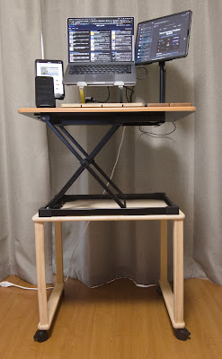
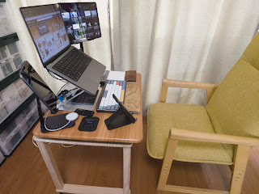
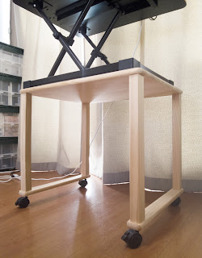
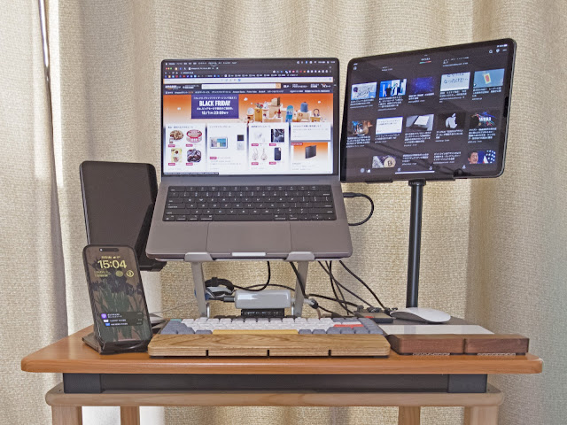
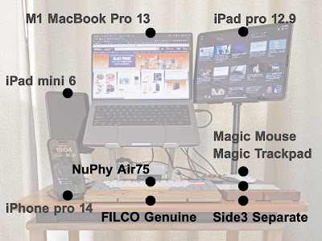
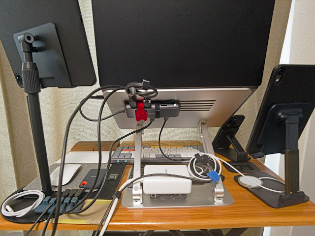
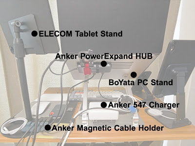
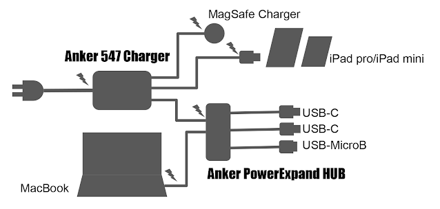

ガジェットについて
ステイホームでの机まわりガジェット 、その後。
※この記事は2023年1月にブログに上げた記事の書き直しです。
昇降デスクというものがあるということを聞いて、時には座って時には立ってメリハリを付けて仕事をするのがよいかも、と思いました。
アマゾンや家電量販店オンラインでいろいろな昇降デスクをみつけることができます。しかし、それらはある程度値がはることや、仕様を見るとかなり重量のあるものばかりでした。実際のところ重いものはあまり好きではありません。
昇降デスク
もっと安くて手軽なものはないか探して見つけたのが下の製品です。机の上に置いて使う比較的小さな昇降台です。写真はアマゾンに掲載されているもです。（現在は廃版）
高さは立ち上げた状態でも40センチ余りしかないので、スタンディング・デスクとして使うには別途下に置く机が必要になります。最初は自宅にあった小さな折りたたみ机を使っていてのですが、もっと低い位置にもできるようにしたかったので、ホームセンターで組み立て式の部品を買ってきて自分で台を作ることにしました。

全体像としては、左の写真のようなものなりました。 
今回はこの全体について、構成など、自分のための記録の意味もあって書きたいと思います。
座って使うときは下の写真のようになります。低めの椅子に対応させました。

ホームセンターで買ったものは、組み立て用にビス穴などをあらかじめ開けてあるパイン材のキットのようなものです。塗装はしませんでした。キャスターも付けたので自宅内フリーアドレス？です。
- 天板 60cmX45cm 1枚
- 脚角棒 43cm 4本
- 天板を角棒に接続するビス 4本
- かすがい 2本
- キャスター（ロックあり）2個
- キャスター（ロックなし）2個
5千円くらいはかかったように思います。
昇降デスクについては以上です。
以下は、これにともなっていろいろ追加したガジェット類について書きます。
正面


アップル製品は省きます。以下があります。
- NuPhy Air75
- FILCO Genuine
- Side3 Separate
◆ メカニカル・キーボード NuPhy Air75
カチャカチャと（できるだけ大きい）音がして打鍵感が楽しめて、ストロークの浅くて疲れにくいものを探しました。つまり、Happy Hack Keybord なんかとは逆コンセプトのキーボードということです。
NuPhy Air75 はキートップの付け替えもできますし、打鍵感も茶軸、赤軸、青軸という分類で「堅さ」を選ぶことができます。私は一番硬い音がする青軸にしました。打鍵感は満足ですが、多分スタバなんかではうるさくて使えないでしょう。自宅だからいいんです（ひとりだし）。
不満点は、バッテリーの持続時間が短いことくらいです。このキーボードにはゲーミングキーボードぽいバックライト機能がついていますが、それを点灯しないように設定すれば少し長く持ちます。
◆ パームレスト FILCO Genuine
MacBook で慣れているせいかもしれないですが、キーボードのキーの位置は手首の接地面と同じ高さか、あるいは少しキーボードより高めの方が楽に感じています。ということで、パームレストも追加しました。
◆ パームレスト Side3 Separate
Magic Trackpadも手首接地面より下にタッチ面がある方が指が楽です。なかなかこの幅のパームレストが見つからず、やむをえずキーボード用のセパレート式を購入し、左右のパームレストを接合しました。幅はピッタリでした。トラックパッド側に傾斜ができるように通常の逆向けにして使っています。
背面


主なものは以下です。
- ELECOM Tablet Stand
- Anker PowerExpand HUB
- BoYata PC Stand
- Anker 547 Charger
- Anker Magnetic Cable Holder
接続の様子は下図のようになっています。

◆ タブレット・スタンド ELECOM Tablet Stand
一本足で、一見不安定のようでいて、意外と安定感があるスタンドでした（私見です）。たぶん金属部分はアルミではなくステンレス製で重量があることが安定感の理由だともいます。iPad 12.9インチを置いて、MacBookでSide Carを使いサブディスプレイとして使ったりしています。
◆ パワーデリバリUSBハブ Anker PowerExpand HUB
MacBookに接続するUSB-Cケーブルが電源を兼ねることができるUSBハブです。これならMacBookに1本だけ抜き差しするだけで済みます。MacBookのUSB-Cコネクタに複数本のケーブルを抜き差しするのは、コネクタの位置をのぞき込んで確認したり、MacBookが動かないようにおさえたりなど案外面倒なのです。ハブ本体はPCスタンドのBoYataの結束バンドで固定しました。
◆ PCスタンド BoYata PC Stand
MacBookを目線の高さにするとともに、下にチャージャーやハブを設置するスペースを確保するために導入しました。
◆ 120W高速充電チャージャー Anker 547 Charger
MacBookに100〜120ワットの電源を供給します。実際には前述のハブを一旦通すので100Wまでとなります。USB-Cの口は4つあり、MacBook以外にiPadなどを高速充電（30W）するためのケーブルとiPhoneやAirPods用にMagSafe充電機を接続しています。
◆ ケーブルホルダー Anker Magnetic Cable Holder
MacBookに外部機器と接続するUCBケーブルやiPadの充電用のケーブルは、ここに待機させるような形で運用しています。プラグの根元のところにマグネットのドングルをつけて、固定台に磁力でくっつけておくかたちですので取り回しが楽です。動画用のポータブルSSDやバックアップ用のHDDなど、しょっちゅう付けたり外したりしているのでこの方法をとりました。
以上です。